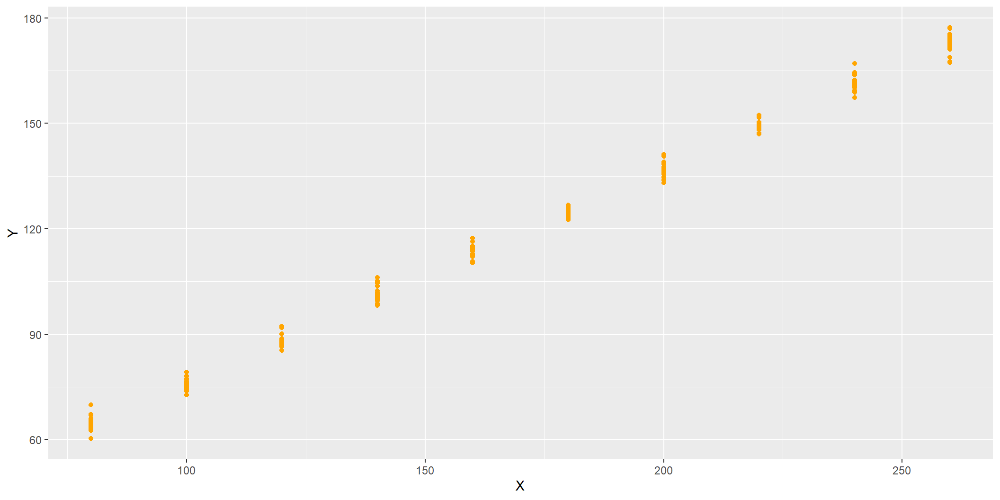

直观数据形态（wide-format）：
fams60<- as_tibble(read.xlsx("../data/Table-2-1-60families-new.xlsx",sheetName = "Sheet1"))
fams60 %>%
kable(align = "c" ) %>%
kable_styling(full_width = T)| Mark | G1 | G2 | G3 | G4 | G5 | G6 | G7 | G8 | G9 | G10 |
|---|---|---|---|---|---|---|---|---|---|---|
| X | 80 | 100 | 120 | 140 | 160 | 180 | 200 | 220 | 240 | 260 |
| Y1 | 55 | 65 | 79 | 80 | 102 | 110 | 120 | 135 | 137 | 150 |
| Y2 | 60 | 70 | 84 | 93 | 107 | 115 | 136 | 137 | 145 | 152 |
| Y3 | 65 | 74 | 90 | 95 | 110 | 120 | 140 | 140 | 155 | 175 |
| Y4 | 70 | 80 | 94 | 103 | 116 | 130 | 144 | 152 | 165 | 178 |
| Y5 | 75 | 85 | 98 | 108 | 118 | 135 | 145 | 157 | 175 | 180 |
| Y6 | 88 | 113 | 125 | 140 | 160 | 189 | 185 | |||
| Y7 | 115 | 162 | 191 |
标准化“长数据”形态（long-format）：
mean_Y_cond <- fams60_long %>%
group_by(group) %>%
summarize(mean_Y_cond=mean(Y)) %>%
add_column(X=X_set, .before = "mean_Y_cond")根据总体回归线（PRC）的定义，你能确定这总体回归线是一条直线（PRL）么？如果是一条直线，请你计算出截距参数和斜率参数 \((\beta_1, \beta_2)\)。
\[\begin{align} E(Y|X_i) &= f(X_i) \quad && \text{(PRC)}\\ &= \beta_1 + \beta_2 X_i \quad && \text{(PRL)} \end{align}\]
根据的定义，请计算出随机干扰项的值：
\[\begin{align} u_i & = Y_i - E(Y|X_i) \\ &= Y_i - (\beta_1 + \beta_2 X_i ) \end{align}\]
CLRM假设4（随机干扰项条件期望值为零）：假设随机干扰项条件期望值为零, 也即\(E(u|X_i)= 0\)。
请验证是否如此？
ui %>%
group_by(group )%>%
summarize(mean_u_cond=mean(ui)) %>%
add_column(X=X_set, .after = "group") %>%
rename("E(u|X_i)"="mean_u_cond") %>%
kable(align = "c" ) %>%
kable_styling(full_width = T)| group | X | E(u|X_i) |
|---|---|---|
| 1 | 80 | 0 |
| 2 | 100 | 0 |
| 3 | 120 | 0 |
| 4 | 140 | 0 |
| 5 | 160 | 0 |
| 6 | 180 | 0 |
| 7 | 200 | 0 |
| 8 | 220 | 0 |
| 9 | 240 | 0 |
| 10 | 260 | 0 |
CLRM假设5（随机干扰项的方差为同方差）：随机干扰项的方差为同方差。也即给定 \(X_i\)的情形下，随机干扰项 \(u_i\)的方差，处处都是相等的。记为：
\[\begin{align} Var(u_i|X_i) & = E \left[ \left( u_i -E(u_i) \right)^2|X_i \right] \\ & = E(u_i^2|X_i) \\ & = E(u_i^2) \\ & \equiv \sigma^2 \end{align}\]
var_cond <- ui %>%
group_by(group) %>%
summarize(var_u_cond=var(ui)) %>%
add_column(X=X_set, .after = "group")
var_cond %>%
rename("var(u|X_i)"="var_u_cond") %>%
kable(digits =c(0,0,2), align = "c" ) %>%
kable_styling(full_width = T) | group | X | var(u|X_i) |
|---|---|---|
| 1 | 80 | 62.50 |
| 2 | 100 | 79.20 |
| 3 | 120 | 58.00 |
| 4 | 140 | 155.67 |
| 5 | 160 | 68.80 |
| 6 | 180 | 140.00 |
| 7 | 200 | 103.00 |
| 8 | 220 | 130.67 |
| 9 | 240 | 372.80 |
| 10 | 260 | 252.67 |
CLRM假设6（随机干扰项之间无自相关）：各个随机干扰之间无自相关。也即给定两个不同的自变量取值（ \(X_i,X_j;i \neq j\)）情形下，随机干扰项 \(u_i,u_j\)的相关系数为0。或者说 \(u_i,u_j\)最好是相互独立的。记为：
在 \(X_i\)为给定情形下，且 \(i,j \in (1, 2, \cdots, n); i \neq j\)，假定：
\[\begin{align} Cov(u_i, u_j|X_i,X_j) & = E \left[ \left( u_i -E(u_i) \right)\left( u_i -E(u_i) \right) \right] \\ & = E(u_iu_j) \\ & \equiv 0 \end{align}\]
对于总体回归模型（PRM）
\[\begin{align} Y_i = \beta_1 + \beta_2 X_i +u_i \end{align}\]
假定我们已经知道总体回归线（PRC）为一条直线，则该直线（PRL）的两个参数（截距参数和斜率参数）分别为： \((\beta_1 , \beta_2) = (17, 0.6)\)。
也即，总体回归函数（PRF）为：
\[\begin{align} E(Y|X_i) &= \beta_1 + \beta_2 X_i \\ &= 17+0.6X_i \end{align}\]
对于随机干扰项，我们假定它服从期望为0，方差为4的独立同分布的正态分布（iid） \(u_i \sim N(\mu=0, \sigma^2 =4) \quad i.i.d\)。
下面根据以上数据生成过程（GDP），（正态）随机生成一份样本数据。
n_each <- 20
set.seed(1234)
sim <- tibble(group = rep(1:10, each=n_each),
X=rep(X_set, each=n_each), # given X values
ui = rnorm(n=n_each*10, mean=0,sd=2), # generate disturbances i.i.d
Y=17+0.6*X+ui) # create Y values 注意，正态随机干扰项按照\(u_i \sim N(\mu=0, \sigma^2 =4) \quad i.i.d\)。
sim %>% DT::datatable(options = list(pageLength =10, dom ="tip"),
caption = str_c("指定总体下生成的1份模拟数据(样本总数n=", n_each*10, "; ","每收入组",n_each,"个数据点)")) %>%
formatRound(c(3,4), digits = 4)把生成的\((X_i, Y_i)\)数据绘制在图中，展示如下：
